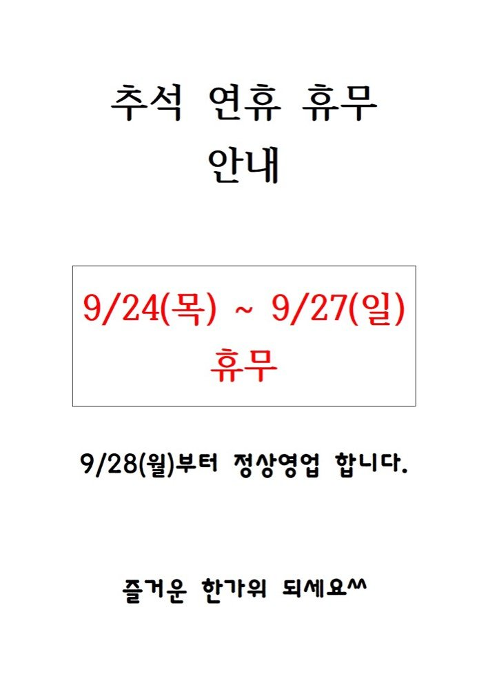

- 스팸계란볶음밥
- 설렁탕&소면
- 매콤제육볶음
- 치킨스틱*머스타드소스
- 매운해물완자전
- 건새우무우조림
- 양파오이초무첨
- 야채겉절이
- 포기김치
- 흑미밥/백미밥
- 양배추샐러드&참깨드레싱
- 탄산음료
구로디지털단지 구내식당 메뉴모음
구로디지털단지 구내식당 메뉴정보
공개 카카오 채널의 메뉴 이미지를 자동 수집하고 OCR로 정리합니다. 텍스트에 오타가 있을 수 있으니 식단 이미지를 함께 확인해 주세요.
- 1 은은
- 더 0 긋표ㄷ
- 쌀밥/흑미잡곡밥
- 감자된장찌개
- 고추장목살주물럭
- 수제유린기
- 도토리묵무침
- 아몬드쥐어채볶음
- 동그리오이무침
- 수제알타리김치
- 그린샐러드&드레싱 Y
- 냉우동
- 백미밥/잡곡밥
- 시래기된장국
- 한방마늘보쌈*
- 등심돈까스&머스타드
- 두부계란부침
- 부주양파무침
- 모듬야채쌈&쌈장
- 그린샐러드&과일드레싱
- 보쌈김치
- 후식/단오박식혜&마카로니
- 숭등/탄산음료

- 욕개장
- 고추장제육볶음
- 모듬준권&조관장
- 미트볼로제스파게티
- 가지양파볶음
- 지커리유지청무침
- 잡곡밥/백미밥
- 그린설러드&쌈채소
- 셀프라면&토스트
- 탄산음료/팝콘